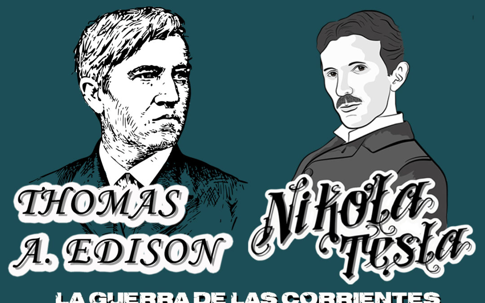
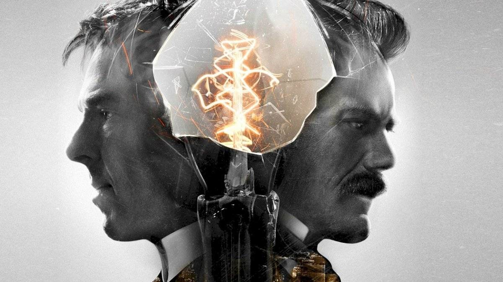
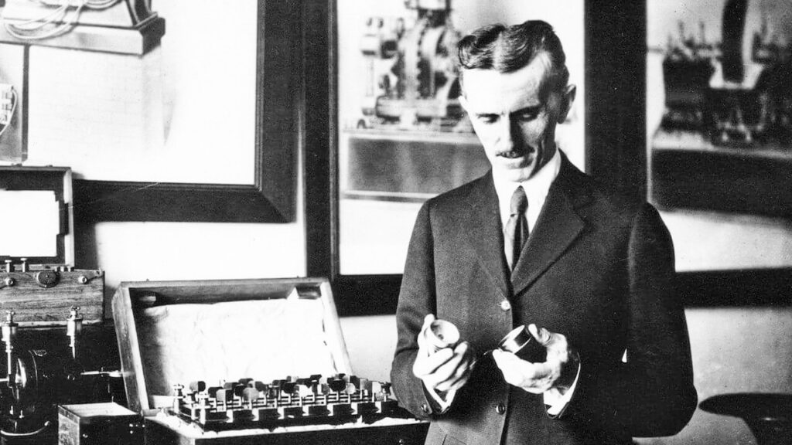

La idea de Tesla era mejor, pero necesitaba a Edison para ponerla
en práctica. Edison defendió su propia teoría a toda costa y de
ninguna manera iba a permitir que un joven extranjero que acababa de
llegar a la ciudad le arrebatase la fama e hiciese peligrar su imperio.
Tesla se topó entonces con una salvaje campaña de difamación.

Edison no quería poner en riesgo su fortuna por culpa de un
"recién llegado". Por ello, el veterano inventor llegó a recorrer
Estados Unidos con la intención de demostrar la peligrosidad de
la corriente alterna, para lo cual no dudó en electrocutar animales
(desde perros y gatos hasta un elefante) para desacreditar la
propuesta de Tesla. También le negó el pago de los 50.000
dólares comprometidos en un primer momento con un comentario burlesco
y esperpéntico:
"Cuando llegues a ser un norteamericano cabal, estarás en
condiciones de apreciar una buena broma yanqui".
Tesla también tuvo problemas con Marconi, a quien se
atribuye el invento de la radio. Marconi ganó el premio Nobel en
1909 por este invento, aunque Tesla había patentado la
idea en 1896. Pero la oficina de patentes dio marcha atrás y
acabó otorgando a Marconi la patente del invento. Se habló mucho
en la época sobre dicho cambio, que algunos atribuyeron a presiones
económicas por parte de Marconi.

Finalmente, en 1943 la Corte Suprema de Estados Unidos
reconoció a Nikola Tesla poco antes de su muerte como el
inventor de la radio y le devolvió la patente, que había estado en
poder de Marconi hasta ese momento.
Nikola Tesla murió solo el 7 de enero de 1943, en una
habitación de hotel en Nueva York, a la edad de 86 años,
de un infarto de miocardio. A su funeral, que se celebró en la
catedral de San Juan el Divino, asistieron más de 2.000
personas que lloraron la pérdida de un auténtico genio. El gobierno de
Estados Unidos, una vez que Nikola Tesla fue enterrado,
intervino su despacho y requisó todos los documentos que contenían sus
estudios e investigaciones, sin embargo, algunos no pudieron ser
comprendidos ni descifrados puesto que Tesla guardaba la
mayoría de sus ideas en su mente. Años más tarde, la familia de
Nikola Tesla, a través de la embajada de Yugoslavia,
logró recuperar parte del material incautado.

“Tras la muerte de Tesla, el gobierno de Estados Unidos requisó
todos los documentos de su despacho”.
Tesla es considerado por muchos como el mejor inventor del
siglo XX. Su figura, un tanto maltratada por la historia, fue
reivindicada posteriormente por movimientos contraculturales que
descubrieron el legado de un hombre que se opuso a las normas
establecidas y que vivió en un mundo que aún no estaba preparado para
sus inventos. Desde el "rayo de la muerte", arma capaz de
disparar haces de partículas, al "teslascopio", un
invento que permitiría la comunicación con seres de otras galaxias, ya
que Tesla estaba convencido de la existencia de seres
inteligentes en otras dimensiones...

Hoy en día, la vida y la obra de Nikola Tesla se dan a
conocer en el museo que lleva su nombre en Belgrado. Un lugar
curioso e interesantísimo donde entender mejor la importancia de uno
de los inventores más importantes de la historia.